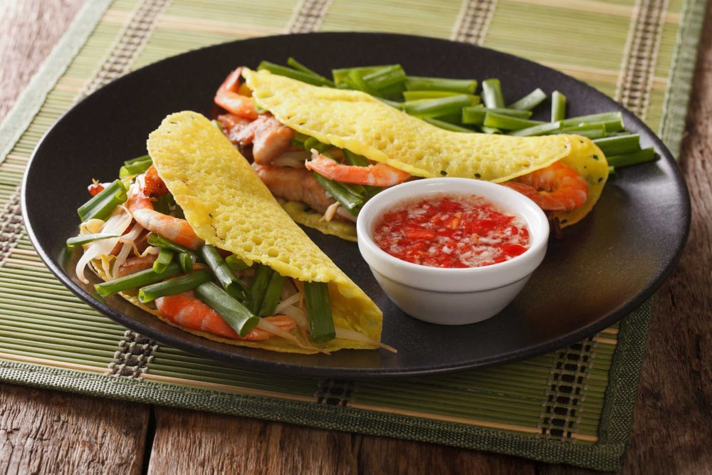

Travel around Vietnam, and you'll find that tastes and dishes vary from North to South.
In the capital, locals may lunch on bún chả with slices of pork belly, while the Saigonese
wolf down bánh xèo (crispy pancakes) rolled with greens and dipped in sweet-and-sour fish sauce.
In the former Imperial City, meaty bún bò Huế is a breakfast favourite, while in Hội An,
you can’t beat a bowl of toothsome cao lầu noodles for a quick snack. From simple home cooking
to addictive street eats to modern Vietnamese dining, it would take a lifetime to eat your way
through all this delicious diversity.
Goi Cuon

Goi Cuon are translucent spring rolls packed with greens, coriander and minced pork or shrimp.
A southern variation has barbecued strips of pork wrapped up with green banana and star fruit,
and then dunked in a rich peanut sauce – every bit as tasty as it sounds.
Banh mi

Banh mi is one of the most popular street foods in Vietnam – and once you've read
what goes into it, you'll be desperate to try it out for yourself! The Vietnamese
(or Saigon) sandwich was first created during French colonial rule during the 19th century.
Banh mi uses a French baguette and is filled with a delicious selection of ingredients.
Banh xeo

These enormous, cheap and filling Vietnamese pancakes contains shrimp, pork, bean sprouts and egg.
They are fried, wrapped in rice paper with greens and dunked in a fish sauce (Nuoc Cham) before eaten.
Bun cha

These enormous, cheap and filling Vietnamese pancakes contains shrimp, pork, bean sprouts and egg.
They are fried, wrapped in rice paper with greens and dunked in a fish sauce (Nuoc Cham) before eaten.
Pho
The country’s great staple dish is Pho (pronounced “fuh”). This noodle soup can be eaten at
any time of day but is primarily eaten at breakfast. It originated in the north of the country
but is now a national dish of Vietnam. A bowl of Pho consists of a light beef or chicken broth
flavoured with ginger and coriander, to which are added broad, flat rice noodles and spring onions.
Meat-wise, slivers of chicken, pork or beef are then added. Tofu is the main vegetarian option.